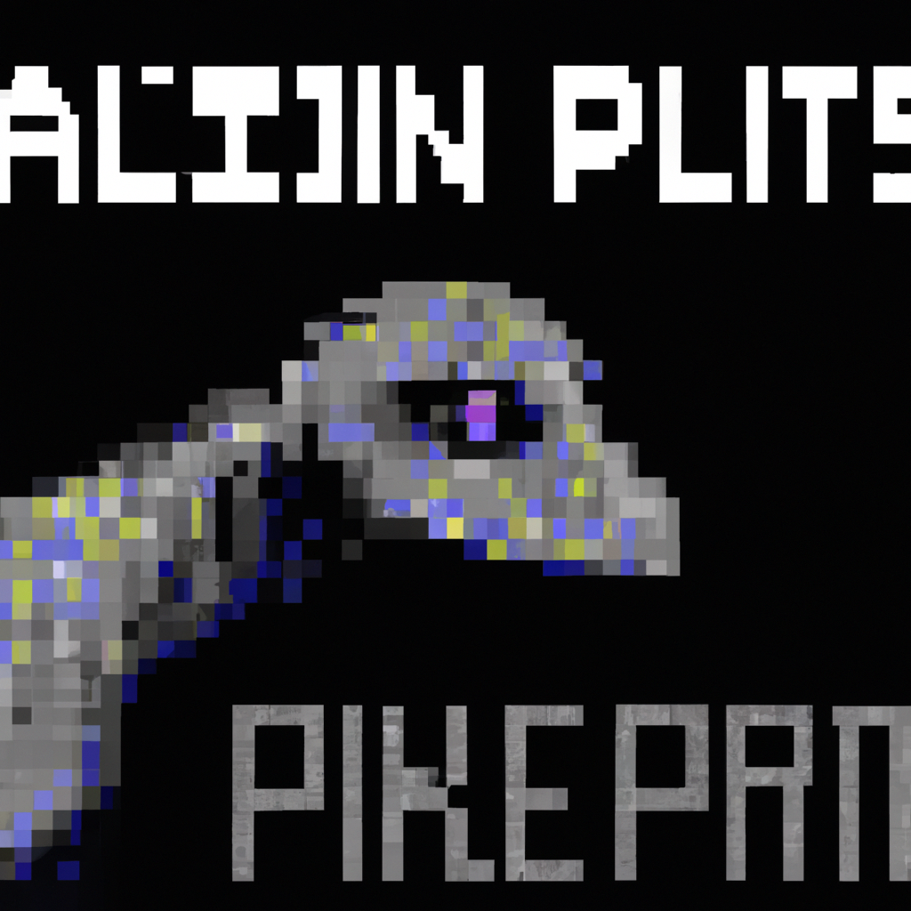

The future of Python and AI
Python is an incredibly versatile programming language, and its integration with Artificial Intelligence (AI) has made it an indispensable tool for developers everywhere. The combination of Python and AI can create powerful tools for data analysis, machine learning, and complex decision making. As AI technology continues to improve, the applications for Python and AI will continue to expand in a variety of exciting ways.
AI and Python can be used to automate mundane tasks, from making decisions about how to allocate resources to predicting customer behavior. AI can also be used to analyze large amounts of data and generate insights that can be used to improve business decisions and operations. Python can be used to automate the process of creating and deploying models, as well as to create custom algorithms for specific tasks.
Python and AI can also be used to create intelligent systems that can interact with humans. These systems can be used to provide assistance in a variety of tasks, from providing customer service to managing complex tasks and operations. This opens up a wide range of possibilities for businesses and developers alike.
Finally, Python and AI can be used to create intelligent and autonomous robots and vehicles. These robots can be used for a variety of tasks, from delivering packages to cleaning up hazardous areas. This opens up new possibilities for businesses and developers to create projects that are both useful and entertaining.
As AI technology continues to improve, the possibilities for Python and AI will continue to expand. The combination of the two technologies is an incredibly powerful tool, and it will be exciting to see what the future holds for Python and AI.<�ody>